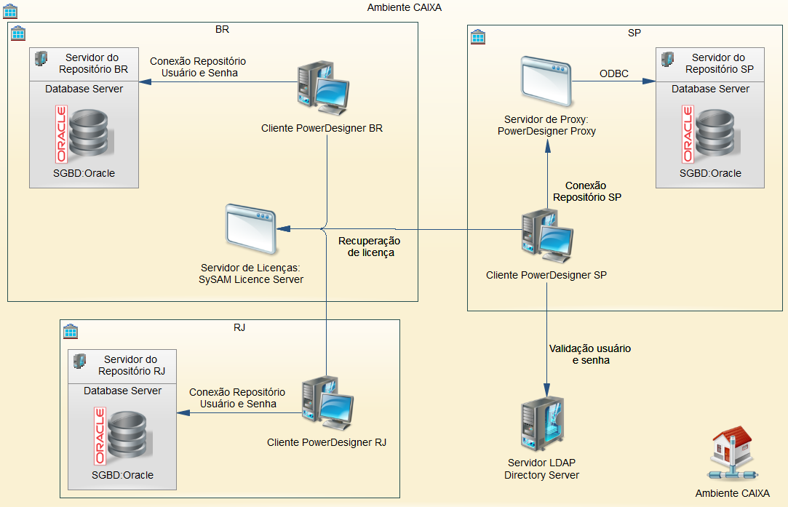
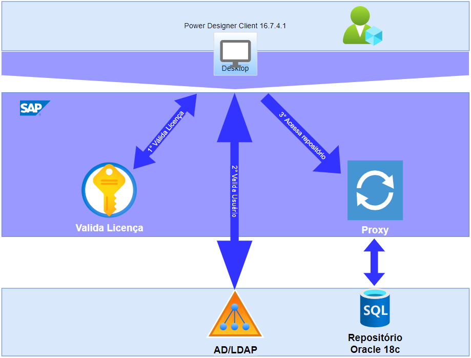
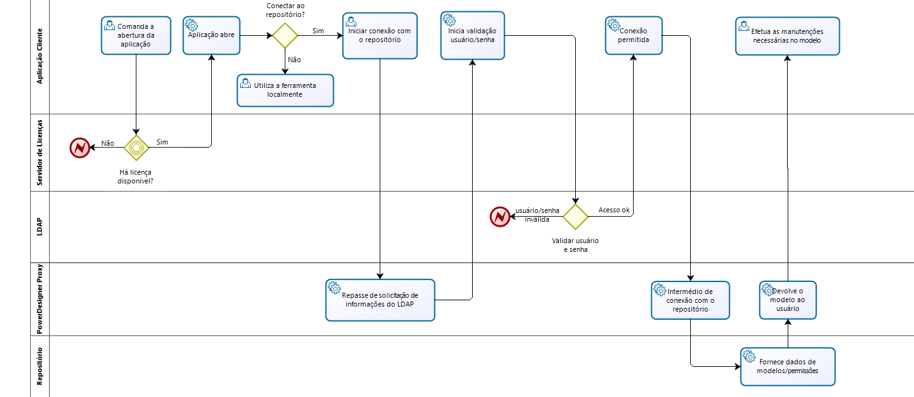

PowerDesigner
Análise de Solução
A atividade de modelagem de dados [1] requer o uso de uma aplicação visual para facilitar a atividade.
Considerando essa necessidade, a CAIXA faz uso da ferramenta SAP PowerDesigner [2], software de modelagem de Dados que permite a manutenção de bases de dados através de uma interface amigável, com objetivo de auxiliar o desenvolvedor na execução de suas atividades, e a terceiros no entendimento do negócio envolvido naquela modelagem (facilitando o repasse de conhecimento entre recursos ou para validação da manutenção efetuada naquele modelo), além de outras funcionalidades.
Arquitetura AS-IS
Inicialmente, a implementação da ferramenta de modelagem de dados, utilizada pela CAIXA, ocorreu de forma descentralizada, devido a limitação da banda de rede, que impedia a centralização do repositório.
Devido a descentralização e a dificuldade técnica de comunicação, a ausência de definição de arquitetura de referência permitiu a cada site implementar e definir a forma de uso mais adequada a sua realidade, gerando as dificuldades identificadas, a saber: versões diferentes entre as ferramentas instaladas em cada site, ausência de padrão na nomenclatura dos modelos, formas de controle de acesso e permissões distintas, organização dos repositórios não compatíveis, ausência de políticas de backup e versionamento e formas de versionamento divergentes, quando existe.
Como os repositórios estavam armazenados em bancos de dados no ambiente de desenvolvimento, eles não se enquadravam nas políticas corporativas de backup e gestão das bases de dados. Como exemplo, em 2015, houve um problema no repositório de SP e o último backup encontrado era de mais de uma semana, incorrendo em perda de modelos de dados e alterações efetuadas no período.
Os sites DF e RJ faziam conexão diretamente dos Clients ao repositório, sendo necessária a configuração de Clients da Oracle, ODBC e criação de conexão aos bancos em cada equipamento e, considerando que o usuário do banco do repositório do PowerDesigner possui permissão de DBA na base, isso representava um risco de segurança para o repositório, e eventuais outros Schemas armazenados na mesma base de dados.
Havia diferenças entre as versões implantadas nos sites e forma de uso das aplicações da suíte PowerDesigner, como, por exemplo, o site de SP utilizava o PowerDesigner Proxy [3] para fazer interface com o repositório, além do uso de versionamento dos modelos.
Na figura e tabela a seguir representamos esse cenário:

| *Site* DF | Os usuários possuíam acesso de leitura a todos modelos do repositório e não havia versionamento dos modelos. |
| *Site* RJ | Os usuários não possuíam acesso ao repositório, ficando este restrito à equipe de ADI e ABD. As solicitações de modelos eram feitas através de RTC (GID). |
| *Site* SP | Os usuários possuíam acesso de leitura aos modelos, com controle de acesso por grupos, onde cada grupo permitia acesso de leitura a todos modelos de uma sigla (sistema). |
Tecnologias
A tabela a seguir apresenta os componentes que existiam em cada site no ambiente AS-IS.
| Tecnologias | DF | RJ | Sp |
|---|---|---|---|
| SAP PowerDesigner Client | 16.5.5 | 16.5.5 | 16.5.5.4 |
| SAP PowerDesigner Proxy | - | - | 16.5.5.4 |
| SAP SySAM | 2.4 | - | - |
| SGBD Oracle \[4\] | 11g | 11g | 12g |
| Autenticação | Local | Local | OpenLDAP |
SAP SySAM
É a ferramenta da SAP que faz a gestão das licenças flutuantes, disponibilizando e recuperando licenças de uso para a ferramenta SAP PowerDesigner Client.
SAP PowerDesigner Client
É uma ferramenta de modelagem visual corporativa e colaborativa mantida pela SAP.
Atualmente na CAIXA, ela é utilizada para a elaboração e manutenção de modelos de dados dos sistemas de informação pelas equipes de desenvolvimento, e usada pelos times dos capítulos de operações para manutenção das bases de dados nos ambientes das aplicações.
SAP PowerDesigner Proxy
É uma ferramenta que facilita a conexão ao banco, evitando a necessidade de configuração no lado do Client, fazendo a interface entre o PowerDesigner Client e o repositório, disponibilizando acesso via serviço e, utilizando cache para agilizar a disponibilização de modelos. A comunicação com a aplicação cliente é feita de forma proprietária.
Arquitetura TO-BE
A arquitetura proposta para sanar os dificultadores encontrados na arquitetura AS-IS é descrita da seguinte forma:
-
Ambiente centralizado, com o objetivo de padronizar a forma de uso, controle de acesso e versionamento dos modelos: um banco de dados em ambiente de produção para acesso a todos modelos ficará disponível a todos usuários. A arquitetura centralizada permite uma gestão mais organizada do ambiente, assim como a atuação da fornecedora em caso de necessidade de suporte.
-
O uso do repositório é padronizado e gerenciado, com versionamento dos modelos e controle de acesso com base em perfis de acesso, por comunidade, e controle de permissão via LDAP, sem a necessidade de controle interno pela aplicação/administrador do repositório.
-
Com o acesso via proxy, que realiza a comunicação entre o cliente e o banco para recuperação e/ou atualização dos modelos de dados ali armazenados, dispensa-se a necessidade de configuração do equipamento do usuário, estando a ferramenta pronta para uso após sua instalação.
-
Possibilita a elaboração de um modelo de dados corporativo, que é uma visualização integrada dos dados produzidos e consumidos por todos os sistemas, com modelos de dados da CAIXA.
A tabela a seguir apresenta a definição das permissões do repositório.
| Perfil | Responsável |
|---|---|
| Administrador | Capítulo de Dados/SUART |
| Gravação | Administradores de Dados e Administradores de Banco de Dados da CESTI |
| Leitura | Equipes de desenvolvimento e gestores de negócio |
A figura a seguir apresenta a forma de execução centralizada do PowerDesigner.

A ferramenta SAP PowerDesigner Client é a interface de modelagem, que oferece os recursos de análise de impacto, modelagem de objetos, conexão ao repositório, versionamento, conexão a diversos SGBDs via ODBC para recuperação e manutenção nas suas estruturas físicas.
O módulo Válida Licença (SAP SySAM) é utilizado para manter e disponibilizar licenças flutuantes ao usuário. Durante sua abertura, a aplicação se conecta ao servidor de licenças e captura uma licença, caso disponível. Não havendo licença a aplicação é encerrada.
A ferramenta SAP PowerDesigner Proxy é utilizada para gerenciar os acessos originados pelo PowerDesigner Client e o repositório de modelos no banco de dados.
O AD/LDAP utiliza o LDAP Oracle para validação do usuário e senha informados, durante o processo de autenticação para acesso ao repositório armazenado no banco de dados.
A conexão do PowerDesigner Client junto ao PowerDesigner Proxy é proprietária da ferramenta e feita através de ODBC ao banco de dados.
Tecnologias
|
Software |
PowerDesigner |
SySAM |
Oracle
Database |
|
|
Client |
Proxy |
|||
|
Fabricante |
SAP |
Oracle |
||
|
Plataforma |
Windows
(x64) |
Windows
Server 2019 (x64) |
EXADATA |
|
|
Versão |
16.7.4.1 |
2.4.2 |
18c |
|
|
URL |
powerdesigner.gestaodedados.caixa |
cnpexdadvm01-scan8.extra.caixa.gov.br |
||
|
Porta(s) |
N/A |
32999 |
27000/27010 |
1521 |
Processo de utilização

A seguir apresentamos as etapas do processo de utilização do PowerDesigner.
-
O usuário comanda a abertura da ferramenta cliente;
-
A ferramenta se conecta ao servidor de licenças para recuperação da licença flutuante, caso disponível;
a. Caso haja licença disponível, a ferramenta inicia sua execução GUI, caso negativo, é apresentada mensagem de erro requerendo ação do usuário;
-
O usuário inicia conexão com o repositório;
-
A ferramenta Cliente conecta-se ao repositório e recupera as informações do servidor LDAP;
-
A ferramenta Cliente inicia conexão com o servidor LDAP para validação de usuário/senha;
a. Caso o usuário seja válido, a ferramenta cliente dá sequência na conexão com o repositório, apresentando os modelos vinculados à matrícula do usuário. O controle de acesso aos modelos é interno na ferramenta;
-
O usuário pode fazer uma avaliação superficial do modelo no repositório, sem efetuar ou comandar o checkout, possibilitando, também, que sejam feitas manutenções, caso necessário;
-
Ao final, é comandado o checkin de modelos, caso tenha ocorrido alguma alteração, sendo este comando restrito aos ADI e DBA dos capítulos de dados e operações.
Referências
[1] WIKIMEDIA. Modelagem de dados. Wikipedia, 29 dez. 2020. Disponível em: [<https://pt.wikipedia.org/wiki/Modelagem_de_dados>](https://pt.wikipedia.org/wiki/Modelagem_de_dados). Acesso em: 20 jul. 2022.
[2] WIKIMEDIA. PowerDesigner. Wikipedia, 15 mai. 2019. Disponível em: [<https://pt.wikipedia.org/wiki/PowerDesigner>](https://pt.wikipedia.org/wiki/PowerDesigner). Acesso em: 20 jul. 2022.
[3] SYBASE. Understanding the Repository Proxy. Sybase, 2006. Disponível em: [<https://infocenter-archive.sybase.com/help/index.jsp?topic=/com.sybase.stf.powerdesigner.docs_12.1.0/html/ryug/ryugp11.htm>](https://infocenter-archive.sybase.com/help/index.jsp?topic=/com.sybase.stf.powerdesigner.docs_12.1.0/html/ryug/ryugp11.htm). Acesso em: 20 jul. 2022.
[4] WIKIMEDIA. Oracle (banco de dados). Wikipedia, 20 out. 2021. Disponível em: [<https://pt.wikipedia.org/wiki/Oracle_(banco_de_dados)>](https://pt.wikipedia.org/wiki/Oracle_(banco_de_dados)). Acesso em: 20 jul. 2022.
Histórico da revisão
| Data | Versão | Descrição | Autor |
|---|---|---|---|
| 13/01/2023 | 1.0.0 | Criação do documento | SUART13 |